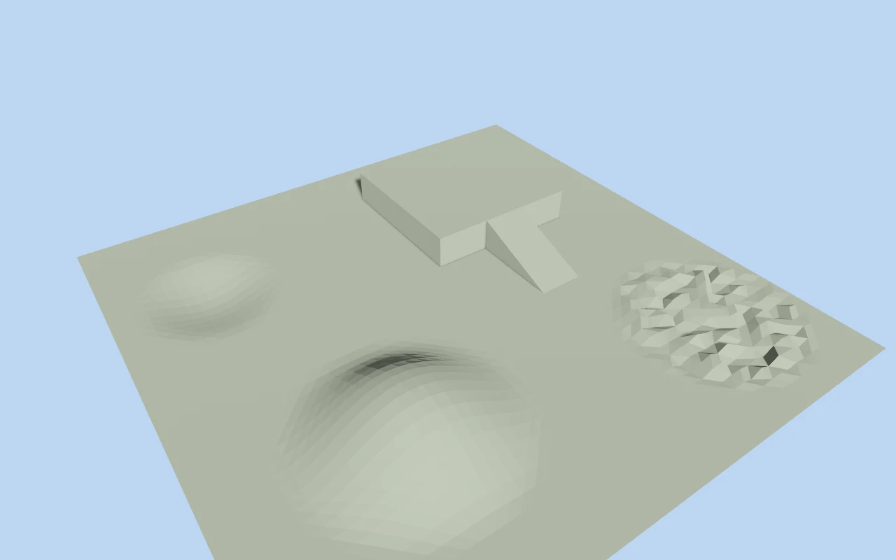

Rust library
Work with worlds, geometry, and editing sessions. Import elevation data, shape terrain with Select and Sculpt, and export it as glTF. Add your own tools and undo each edit exactly.
Arcfield source (access required)Raise a hill, cut a cliff, or build a terrace. Arcfield is a Rust kit for adding tile-based terrain editing to your own app or game.
Explore the tile model
Each tile owns its four corner heights. When corners match along a shared edge, the ground joins. When the heights differ, a sheer face fills the gap.
Use the parts you need to draw terrain in your app, add terrain editing, or build an editor of your own.
Work with worlds, geometry, and editing sessions. Import elevation data, shape terrain with Select and Sculpt, and export it as glTF. Add your own tools and undo each edit exactly.
Arcfield source (access required)Draw terrain with arcfield-terrain-bevy and assemble an editor with arcfield-interface-bevy. Both live in the separate arcfield-bevy repository.
With access to arcfield-bevy and a sibling checkout of Arcfield, run this from the arcfield-bevy root. You’ll need stable Rust, just, and a graphics driver for Bevy.
just capture --out shot.pngOpen shot.png to see the result.
In development
Workbench is a browser app that shows how the Arcfield kit and Bevy integrations fit together. It’s built in arcfield-bevy and will run as WebAssembly at arcfield.app.